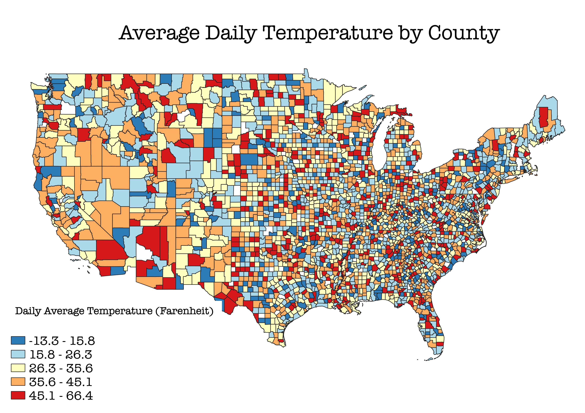

Homework 7: Choropleth
Delaney Black
This map is a choropleth map of the average daily air temperature in the continental United States, measured in Farenheit. I was interested in how much variation existed in the average daily temperatures across different lattitudes in the US, and it was surprising how much variation there was in northern and southern areas. I expected fairly uniform results (higher temperatures in the south, lower temperatures in the north) but because this data was taken over a long period of time, they were less uniform. In the fututre, I will likely specify month or season to make the results clearer.

Data used for this project
Link to geoJSON
Data was retrieved from the National Oceanic & Atmosphere Administration (NOAA)
Link to cleaned CSV